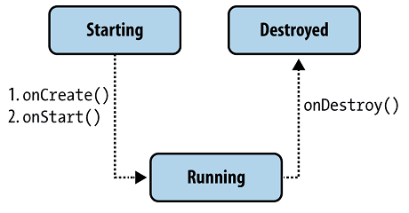

<!DOCTYPE html>
<html>

<!-- Mirrored from developer.alexanderklimov.ru/android/theory/services-theory.php by HTTrack Website Copier/3.x [XR&CO'2014], Wed, 16 Jul 2014 14:51:49 GMT -->
<!-- Added by HTTrack --><meta http-equiv="content-type" content="text/html;charset=utf-8" /><!-- /Added by HTTrack -->
<head>
<meta charset=utf-8>
<title>Android: Службы</title>

<meta name="viewport" content="width=device-width, initial-scale=1.0">

<!-- Le styles -->
<link href="../../assets/css/bootstrap.css" rel="stylesheet">
<style type="text/css">
  body {
    padding-top: 60px;
    padding-bottom: 10px;
  }
  .sidebar-nav {
    padding: 9px 0;
  }
</style>
	
<link href="../../assets/css/bootstrap-responsive.css" rel="stylesheet">
	
   <!-- Le HTML5 shim, for IE6-8 support of HTML5 elements -->
    <!--[if lt IE 9]>
      <script src="http://html5shim.googlecode.com/svn/trunk/html5.js"></script>
    <![endif]-->

    <!-- Le fav and touch icons -->
    
<link rel="icon" href="../../favicon.ico" type="image/x-icon" />
<link rel="shortcut icon" href="../../favicon.ico" type="image/x-icon" />   
</head>

<body>
<div class="navbar navbar-inverse navbar-fixed-top">
    <div class="navbar-inner">
        <div class="container-fluid">
        <a class="btn btn-navbar" data-toggle="collapse" data-target=".nav-collapse">
          <span class="icon-bar"></span>
          <span class="icon-bar"></span>
          <span class="icon-bar"></span>
        </a>
        
        <div class="nav-collapse collapse">
          <p class="navbar-text pull-right">
			<a data-toggle="modal" href="#myModal" class="navbar-link">Гость</a>
          </p>
          <ul class="nav">
            
          </ul>
        </div><!--/.nav-collapse -->
        </div>
    </div>
</div>

<div class="row-fluid">
    <div class="span5">
        <p>
		<a href="http://developer.alexanderklimov.ru/"></a>
		</p>
    
    </div><!--/span-->
    
	<div class="span5">
        <p style="color:green; font-style: italic; font-size: small;">
		/* Моя кошка замечательно разбирается в программировании. Стоит мне объяснить проблему ей - и все становится ясно. */<br>John Robbins, Debugging Applications, Microsoft Press, 2000
		</p>
    </div><!--/span-->
    
	<div class="span2">
        <p>
		<a href="http://feeds.feedburner.com/alexanderklimov/VJcl"></a>
		</p>
    </div><!--/span-->
</div><!--/row-->	
<div class="clearfix"></div>
	
<noindex><!--Rating@Mail.ru COUNTER--><script language="JavaScript" type="text/javascript"><!--
d=document;var a='';a+=';r='+escape(d.referrer)
js=10//--></script><script language="JavaScript1.1" type="text/javascript"><!--
a+=';j='+navigator.javaEnabled()
js=11//--></script><script language="JavaScript1.2" type="text/javascript"><!--
s=screen;a+=';s='+s.width+'*'+s.height
a+=';d='+(s.colorDepth?s.colorDepth:s.pixelDepth)
js=12//--></script><script language="JavaScript1.3" type="text/javascript"><!--
js=13//--></script><script language="JavaScript" type="text/javascript"><!--
d.write('')
if(11<js)d.write('<'+'!-- ')//--></script><noscript></noscript><script language="JavaScript" type="text/javascript"><!--
if(11<js)d.write('--'+'>')//--></script><!--/COUNTER--></noindex><ul class="nav nav-pills">
<li class=""><a href="http://rusnetframework.blogspot.com/">Блог</a></li>
<li class=""><a href="http://developer.alexanderklimov.ru/index.php">C#/Visual Basic</a></li>
<li class=""><a href="http://developer.alexanderklimov.ru/windowsphone/wp.php">Windows Phone</a></li>
<li class=""><a href="http://developer.alexanderklimov.ru/wpf/wpf.php">WPF</a></li>
<li class=""><a href="http://developer.alexanderklimov.ru/php">PHP</a></li>
<li class=""><a href="http://developer.alexanderklimov.ru/silverlight/silverlight.php">Silverlight</a></li>
<li class="active"><a href="http://developer.alexanderklimov.ru/android">Android</a></li>
<li class=""><a href="http://developer.alexanderklimov.ru/arduino">Arduino</a></li>
</ul>
<div class="container-fluid">
    
	<div class="row-fluid">
        <!--левое меню -->
		<div class="span2">
            <div class="well sidebar-nav">
            <ul class="nav nav-list">
<li class=""><a href="../index-2.html">Главная</a></li>
<li class="active"><a href="index.html">Теория</a></li>
<li class=""><a href="../views.html">Palette</a></li>
<li class=""><a href="../listview/index.html">ListView</a></li>
<li class=""><a href="../catshop/catshop.html">Котошоп</a></li>
<li class=""><a href="../animation.html">Анимация</a></li>
<li class=""><a href="../sqlite/index.html">SQLite</a></li>
<li class=""><a href="../opengles/index.html">OpenGL ES</a></li>
<li class=""><a href="../library/index.html">Библиотеки</a></li>
<li class=""><a href="../games/index.html">Игры</a></li>
<li class=""><a href="../emulator.html">Эмулятор</a></li>
<li class=""><a href="../tips-android.html">Советы</a></li>
<li class=""><a href="../articles-android.html">Статьи</a></li>
<li class=""><a href="../books.html">Книги</a></li>
<li class=""><a href="../java/java.html">Java. Экспресс-курс</a></li>
<li class=""><a href="../design/index.html">Дизайн</a></li>
<li class=""><a href="../opensource.html">Open Source</a></li>
<li class=""><a href="../links.html">Полезные ресурсы</a></li>
</ul>            </div><!--/.well -->
        </div><!--/span-->


        <div class="span8">

		<div class="row-fluid">
            <div class="span12">
			
			            <div id="myModal" class="modal hide fade" tabindex="-1" role="dialog" aria-labelledby="myModalLabel" aria-hidden="true">
            <div class="modal-header">
              <button type="button" class="close" data-dismiss="modal" aria-hidden="true">&times;</button>
              <h3 id="myModalLabel">Читайте на здоровье!</h3>
            </div>
            <div class="modal-body">
            
              <p>Статья проплачена кошками - всемирно известными производителями котят.</p>

            <p>Если статья вам понравилась, то можете <a href="http://developer.alexanderklimov.ru/donate.php">поддержать проект</a>.</p>
			
			            
            </div>
            <div class="modal-footer">
              <button class="btn" data-dismiss="modal">Закрыть</button>
              
            </div>
          </div>                
<h1 class="text-warning">Службы (Сервисы)</h1>

<p>
<a href="#allservices">Список всех запущенных служб</a>

</p>

<p>Службы (Сервисы) в Android работают как фоновые процессы и представлены классом <b>android.app.Service</b>. Они не имеют пользовательского интерфейса и нужны в тех случаях, когда не требуется вмешательства пользователя. Сервисы работают в фоновом режиме, выполняя сетевые запросы, обрабатывая информацию, запуская уведомления и т.д. Служба может быть запущена и будет продолжать работать до тех пор, пока кто-нибудь не остановит её или пока она не остановит себя сама. Сервисы предназначены для длительного существования, в отличие от активностей. Они могут работать, постоянно перезапускаясь, выполняя постоянные задачи или выполняя задачи, требующие много времени.</p>

<p>Клиентские приложения устанавливают подключение к службам и используют это подключение для взаимодействия со службой. С одной и той же службой могут связываться множество клиентских приложений.</p>

<p>Android дает сервисам более высокий приоритет, чем бездействующим активностям, поэтому вероятность того, что они будут завершены из-за нехватки ресурсов, заметно уменьшается. По сути, если система должна преждевременно завершить работу запущенного сервиса, он может быть настроен таким образом, чтобы запускаться повторно, как только станет доступно достаточное количество ресурсов. В крайних случаях прекращение работы сервиса (например, задержка при проигрывании музыки) будет заметно влиять на впечатления пользователя от приложения, и в подобных ситуациях приоритет сервиса может быть повышен до уровня активности, работающей на переднем плане.</p>

<p>Используя cервисы, можете быть уверены, что ваши приложения продолжат работать и реагировать на события, даже если они в неактивном состоянии. Для работы сервисам не нужен отдельный графический интерфейс, как в случае с активностями, но они по-прежнему выполняются в главном потоке хода приложения. Чтобы повысить отзывчивость вашего приложения, нужно уметь переносить трудоемкие процессы (например, сетевые запросы) в фоновые потоки, используя классы Thread 
и AsyncTask.</p>

<p>Службы идеально подходят для проведения постоянных или регулярных операций, а также для обработки событий даже тогда, когда активности вашего приложения невидимы, работают в пассивном режиме или закрыты.</p>

<p>Сервисы запускаются, останавливаются и контролируются из различных компонентов приложения, включая другие сервисы, активности и приёмники широковещательных намерений. Если ваше приложение выполняет задачи, которые не зависят от прямого взаимодействия с пользователем, сервисы могут стать хорошим выбором.</p>

<p>Запущенные сервисы всегда имеют больший приоритет, чем бездействующие или невидимые активности, поэтому менее вероятно, что их работа завершится преждевременно при распределении ресурсов. Единственная причина, почему Android может досрочно остановить Сервис, — выделение дополнительных ресурсов для компонентов, работающих на переднем плане (как правило, для активностей). Если такое случится, ваш сервис автоматически перезапустится, когда будет достаточно доступных ресурсов.</p>

<p>Когда сервис напрямую взаимодействует с пользователем (например, проигрывая музыку), может понадобиться повысить его приоритет до уровня активностей, работающих на переднем плане. Это гарантия того, что сервис завершится только в крайнем случае, но при этом снижается его доступность во время выполнения, мешая управлять ресурсами, что может испортить общее впечатление от приложения.</p>

<p>Приложения, которые регулярно обновляются, но очень редко или нерегулярно взаимодействуют с пользователем, можно назвать первыми кандидатами на реализацию в виде сервисов. Проигрыватели MP3 и приложения, отслеживающие спортивные результаты, — примеры программ, которые должны постоянно работать и обновляться без необходимости отображать активность.</p>

<h2 class="text-warning">Жизненный цикл служб</h2>

<p>Подобно активностям служба имеет свои методы жизненного цикла:</p>
<ul>
<li><b>onCreate()</b></li>
<li><b>onStartCommand()</b></li>
<li><b>onDestroy()</b></li>
</ul>

<p></p>

<p>Для быстрого создания заготовок для методов используйте команду меню <b>Source | Override/Implement Methods</b>.</p>

<p>Реализуя эти методы обратного вызова в своей службе, вы можете контролировать вложенные жизненные циклы службы. В полном жизненном цикле службы существует два вложенных цикла:</p>
<ul>
<li>полная целая жизнь службы — промежуток между временем вызова метода <b>onCreate()</b> и временем возвращения <b>onDestroy()</b>. Подобно активности, для служб производят начальную инициализацию в <b>onCreate()</b> и освобождают все остающиеся ресурсы в <b>onDestroy()</b></li>
<li>активная целая жизнь службы — начинается с вызова метода <b>onStartCommand()</b>. Этому методу передается объект <b>Intent</b>, который передавали в метод <b>startService()</b>.</li>
</ul>

<p>Из своего приложения службу можно запустить вызовом метода <b>Context.startService()</b>, остановить через <b>Context.stopService()</b>. Служба может остановить сама себя, вызывая методы <b>Service.stopSelf()</b> или <b>Service.stopSelfResult()</b>.</p>

<p>Можно установить подключение к работающей службе и использовать это подключение для взаимодействия со службой. Подключение устанавливают вызовом метода <b>Context.bindService()</b> и закрывают вызовом <b>Context.unbindService()</b>. Если служба уже была остановлена, вызов метода <b>bindService()</b> может её запустить.</p>

<p>Методы <b>onCreate()</b> и <b>onDestroy()</b> вызываются для всех служб независимо от того, запускаются ли они через <b>Context.startService()</b> или <b>Context.bindService()</b>.</p>

<p>Если служба разрешает другим приложениям связываться с собой, то  привязка осуществляется с помощью дополнительных методов обратного вызова:</p>
<ul>
<li><b>IBinder onBind(Intent intent)</b></li>
<li><b>onUnbind(Intent intent)</b></li>
<li><b>onRebind(Intent intent)</b></li>
</ul>

<p>В метод обратного вызова <b>onBind()</b> передают объект <b>Intent</b>, который был параметром в методе <b>bindService()</b>, а в метод обратного вызова <b>onUnbind()</b> — объект <b>Intent</b>, который передавали в метод <b>unbindService()</b>. Если служба разрешает связывание, метод <b>onBind()</b> возвращает канал связи, который используют клиенты, чтобы взаимодействовать со службой. Метод обратного вызова <b>onRebind()</b> может быть вызван после <b>onUnbind()</b>, если новый клиент соединяется со службой.</p>

<h2 class="text-warning">Создание службы</h2>

<p>Чтобы определить службу, необходимо создать новый класс, расширяющий базовый класс <b>Service</b> (<b>extends Service</b>). В создаваемом классе надо будет определить методы обратного вызова <b>onBind()</b> и <b>onCreate()</b>:</p>

<pre><code class="java">
import android.app.Service; 
import android.content.Intent; 
import android.os.IBinder; 

public class MyService extends Service {
    @Override
    public void onCreate() {
        // TODO: действия, которые будут выполняться при создании сервиса
    }
   
   @Override
   public IBinder onBind(Intent intent) {
        // TODO: Заменить реализацией привязки сервиса
        return null;
    }
}
</code></pre>

<h3 class="text-warning">Регистрация службы в манифесте</h3>

<p>Как только вы создали новую службу, её необходимо зарегистрировать в манифесте приложения при помощи элемента &lt;service&gt; в секции &lt;appiication&gt;. Вы можете использовать атрибуты элемента &lt;service&gt;, чтобы запускать или останавливать службу и определять любые разрешения, требуемые обращения к ней из других приложений, используя флаги в элементе &lt;requires-permission&gt;. Используйте атрибут <b>requires-permission</b>, чтобы и другие приложения имели доступ к вашему сервису.Например, зарегистрировать службу с именем MyService можно следующим образом:</p>

<pre><code class="xml">
&lt;application 
    android:icon=&quot;@drawable/icon&quot; 
    android:label=&quot;@string/app_name&quot;&gt; 
    &lt;service 
        android:enabled=&quot;true&quot; 
        android:name=&quot;.MyService&quot;&gt; 
    &lt;/service&gt; 
&lt;/application&gt; 
</code></pre>

<p>Также можно добавить атрибут <b>permission</b>, чтобы сервис запускался только вашим приложением.</p>

<h3 class="text-warning">Запуск сервиса и управление его перезагрузкой</h3>

<p>В большинстве случаев также необходимо переопределить метод <b>onStartCommand()</b>. Он вызывается каждый раз, когда сервис стартует с помощью метода <b>startService()</b>, поэтому может быть выполнен несколько раз на протяжении работы. Вы должны убедиться, что ваш сервис это предусматривает.</p>

<p>Метод <b>onStartCommand()</b> заменяет устаревший метод <b>onStart()</b>, который использовался в Android 2.0. В отличие от <b>onStart()</b> новый метод позволяет указать системе, каким образом обрабатывать перезапуски, если сервис остановлен системой без явного вызова методов <b>stopService()</b> или <b>stopSelf()</b>.</p>

<pre><code class="java">
@Override
public int onStartCommand(Intent intent, int flags, int startId) {
    // TODO Запустить поток в фоновом режиме для обработки.
    return Service.START_STICKY;
}
</code></pre>

<p>Сервисы запускаются в главном потоке приложения; это значит, что любые операции, выполняющиеся в обработчике <b>onStartCommand()</b>, будут работать в контексте главного потока GUI. На практике при реализации сервиса в методе <b>onStartCommand()</b> создают и запускают новый поток, чтобы выполнять операции в фоновом режиме и останавливать сервис, когда работа завершена.</p>

<p>Такой подход позволяет методу <b>onStartCommand()</b> быстро завершить работу и даёт возможность контролировать поведение сервиса при его повторном запуске, используя одну из констант.</p>

<ul>
<li><b>START_STICKY</b> - Описывает стандартное поведение. Похоже на то, как был реализован метод <b>onStart()</b> в Android 2.0. Если вы вернете это значение, обработчик <b>onStartCommand()</b> будет вызываться при повторном запуске сервиса после преждевременного завершения работы. Обратите внимание, что аргумент <b>Intent</b>, передаваемый в <b>onStartCommand()</b>, получит значение <i>null</i>. Данный режим обычно используется для сервисов, которые сами обрабатывают свои состояния, явно стартуя и завершая свою работу при необходимости (с помощью методов <b>startService()</b> и <b>stopService()</b>). Это относится к сервисам, которые проигрывают музыку или выполняют другие задачи в фоновом режиме</li>
<li><b>START_NOT_STICKY</b> - Этот режим используется в сервисах, которые запускаются для выполнения конкретных действий или команд. Как правило, такие сервисы используют <b>stopSelf()</b> для прекращения работы, как только команда выполнена. После преждевременного прекращения работы сервисы, работающие 
в данном режиме, повторно запускаются только в том случае, если получат вызовы. Если с момента завершения работы Сервиса не был запущен метод <b>startService()</b>, он остановится без вызова обработчика <b>onStartCommand()</b>. Данный режим идеально подходит для сервисов, которые обрабатывают конкретные запросы, особенно это касается регулярного выполнения заданных действий (например, обновления или сетевые запросы). Вместо того, чтобы перезапускать сервис при нехватке ресурсов, часто более целесообразно позволить ему остановиться и повторить попытку запуска по прошествии запланированного интервала</li>
<li><b>START_REDELIVER_INTENT</b> - В некоторых случаях нужно убедиться, что команды, которые вы посылаете сервису, выполнены. Этот режим — комбинация предыдущих двух. Если система преждевременно завершила работу сервиса, он запустится повторно, но только когда будет сделан явный запрос на запуск или если процесс завершился до вызова метода <b>stopSelf()</b>. В последнем случае вызовется обработчик <b>onStartCommand()</b>, он получит первоначальное намерение, обработка которого не завершилась должным образом.</li>
</ul>

<p>Обратите внимание, что при окончании всех операций каждый из этих режимов требует явной остановки сервиса с помощью методов <b>stopService()</b> или <b>stopSelf()</b>.</p>

<p>Режим перезапуска, который вы указываете в качестве значения, возвращаемого методом <b>onStartCommand()</b>, будет влиять на параметры, передаваемые при последующих вызовах.</p>

<p>Изначально намерение выступает в качестве параметра, который передастся в метод <b>startService()</b> при запуске сервиса. После перезапуска системой он может иметь значение <i>null</i> (если установлен режим <b>START_STICKY</b>) или оригинальное (если установлен флаг <b>START_REDELIVER_INTENT</b>).</p>

<p>Параметр <b>flag</b> может помочь узнать, как именно был запущен сервис:</p>

<ul>
<li>START_FLAG_REDELIVERY — указывает на то, что параметр Intent повторно передан при принудительном завершении работы сервиса перед явным вызовом метода stopSelf()</li>
<li>START_FLAG_RETRY — указывает на то, что сервис повторно запущен после непредвиденного завершения работы; передается в том случае, если ранее сервис работал в режиме START_STICKY</li>
</ul>

<pre><code class="java">
@Override
public int onStartCommand(Intent intent, int flags, int startId) {
    if ((flags & START_FLAG_RETRY) == 0) {
        // TODO Если это повторный запуск, выполнить какие-то действия.
    }
    else {
        // TODO Альтернативные действия в фоновом режиме.
    }
    return Service.START_STICKY;
}
</code></pre>

<h3 class="text-warning">Запуск и остановка сервисов</h3>

<p>Чтобы запустить службу, в клиентском приложении необходимо вызывать метод <b>startService()</b>. Существует два способа вызова службы:</p>
<ul>
<li>явный вызов;</li>
<li>неявный вызов</li>
</ul>

<p>Пример для явного вызова службы с именем MyService:</p>

<pre><code class="java">  
startService(new Intent(this, MyService.class));
</code></pre>

<p>Также можно явно определить службу, создав экземпляр класса этой службы.</p>

<p>Пример неявного вызова службы:</p>

<pre><code class="java"> 
startService(new Intent(MyService.SERVICE_ACTION)); 
</code></pre>

<p>Чтобы использовать этот пример, необходимо включить константу <b>SERVICE_ACTION</b>, идентифицирующую службу, в класс MyService, например:</p>

<pre>
private static String SERVICE_ACTION = "ru.alexanderklimov.media.PLAYER";
</pre>

<p>и использовать фильтр намерений, чтобы зарегистрировать его как провайдера <b>SERVICE_ACTION</b>. Если служба потребует разрешений, которые не имеет ваше приложение, то запрос вызовет исключение <b>SecurityException</b>.</p>

<p>Как только сервис завершил выполнение тех действий, для которых он запускался, вы должны вызвать метод <b>stopSelf()</b> либо без передачи параметра, чтобы ускорить остановку работы, либо передав значение <b>startId</b>, чтобы убедиться, что задачи выполнены для всех экземпляров, запущенных с помощью вызова <b>startService()</b>, как показано в следующем фрагменте:</p>

<pre><code class="java">
stopSelf(startId);
</code></pre>

<p>Явная остановка сервиса по завершении необходимых задач позволяет системе получать обратно ресурсы, которые в ином случае оставались бы заняты. Поскольку приоритет сервисов повышенный, система, как правило, не завершает их работу, поэтому ее окончание по собственной инициативе может существенно улучшить эффективность использования ресурсов вашим приложением.</p>

<p>Для остановки работы используйте метод <b>stopService()</b>, передавая ему объект <b>Intent</b>, определяющий нужный сервис.</p>

<p>Если метод <b>startService()</b> вызывается для сервиса, который уже работает, обработчик <b>onStartCommand()</b>, принадлежащий объекту <b>Service</b>, будет вызван повторно. Вызовы <b>startService()</b> не накапливаются, поэтому единственный вызов метода <b>stopService()</b> завершит работу сервиса, неважно, сколько раз производился вызов <b>startService()</b>.</p>

<p>Давайте создадим практическое приложение для работы со службой. Наша служба будет запускать на воспроизведение музыкальный файл, который будет  
проигрываться в фоновом режиме. Управлять службой можно будет из активности. Создайте новый проект. Для службы создайте отдельный класс <b>PlayService</b>. Служба будет загружать музыкальный файл <i>sample.mp3</i> из каталога <b>res/raw/</b> (разместите там  свой MP3-файл).</p>

<h2 class="text-warning">PlayService.java</h2>
<pre><code class="java">
package ru.alexanderklimov.servicelaunch; 

import android.app.Service; 
import android.content.Intent; 
import android.media.MediaPlayer; 
import android.os.IBinder; 
import android.widget.Toast; 

public class PlayService extends Service 
{ 
    MediaPlayer mPlayer; 
    @Override 
    public IBinder onBind(Intent intent) 
	{ 
        return null; 
    } 

    @Override 
    public void onCreate() 
	{ 
        Toast.makeText(this, "Служба создана", 
            Toast.LENGTH_SHORT).show(); 
        mPlayer = MediaPlayer.create(this, R.raw.sample); 
        mPlayer.setLooping(false); 
    } 
	
    @Override 
    public void onStart(Intent intent, int startid) 
	{
	    Toast.makeText(this, "Служба запущена", 
            Toast.LENGTH_SHORT).show(); 
        mPlayer.start(); 
    } 
	
    @Override 
    public void onDestroy() 
	{ 
        Toast.makeText(this, "Служба остановлена", 
            Toast.LENGTH_SHORT).show(); 
        mPlayer.stop(); 
    } 
}
</code></pre>

<p>Зарегистрируем службу в файле манифеста.</p>

<pre><class="xml">
&lt;service 
    android:enabled=&quot;true&quot; 
    android:name=&quot;.PlayService&quot;&gt; 
&lt;/service&gt; 
</class></pre>

<p>В файле разметки для активности определим две кнопки: Старт и Стоп:</p>

<pre><code class="xml">
&lt;?xml version=&quot;1.0&quot; encoding=&quot;utf-8&quot;?&gt; 
&lt;LinearLayout xmlns:android=&quot;http://schemas.android.com/apk/res/android&quot; 
    android:orientation=&quot;vertical&quot; 
    android:layout_width=&quot;fill_parent&quot; 
    android:layout_height=&quot;fill_parent&quot; 
    android:gravity=&quot;center&quot;&gt; 
&lt;Button 
    android:layout_height=&quot;wrap_content&quot; 
    android:id=&quot;@+id/btn_start&quot; 
    android:text=&quot;Старт&quot; 
    android:layout_width=&quot;fill_parent&quot;/&gt; 
&lt;Button 
    android:id=&quot;@+id/btn_stop&quot; 
    android:layout_height=&quot;wrap_content&quot; 
    android:text=&quot;Стоп&quot; 
    android:layout_width=&quot;fill_parent&quot;/&gt; 
&lt;/LinearLayout&gt; 
</code></pre> 

<p>В классе активности в обработчиках событий кнопок будем вызывать методы <b>startService()</b> и <b>stopService()</b> для управления службой.</p>

<pre><code class="java">
package ru.alexanderklimov.servicelaunch; 

import android.app.Activity; 
import android.content.Intent; 
import android.os.Bundle; 
import android.view.View; 
import android.widget.Button; 

public class LaunchActivity extends Activity 
@Override 
public void onCreate(Bundle savedInstanceState) 
{
    super.onCreate(savedInstanceState); 
    setContentView(R.layout.main); 

	final Button btnStart (Button)findViewById(R.id.btn_start); 
    final Button btnStop (Button)findViewById(R.id.btn_stop); 

	// запуск службы 
    btnStart.setOnClickListener(new View.OnClickListener() 
    @Override 
    public void onClick(View v) 
	{
	    // используем явный вызов службы 
        startService( 
            new Intent(LaunchActivity.this, PlayService.class));
	}
 
    // остановка службы 
    btnStop.setOnClickListener(new View.OnClickListener() 
    @Override 
    public void onClick(View v) 
	{
	    stopService( 
            new Intent(LaunchActivity.this, PlayService.class)); 
	}
}
</code></pre>

<p>Запущенная служба будет выполняться независимо от состояния активности, несмотря на то, что эти компоненты находятся в одном приложении: если её завершить, служба все равно останется работать.</p>

<h2 class="text-warning" id="allservices">Список всех запущенных служб</h2>

<pre><code class="java">
ActivityManager am = (ActivityManager) this
		.getSystemService(ACTIVITY_SERVICE);
List&lt;ActivityManager.RunningServiceInfo&gt; rs = am.getRunningServices(50);

for (int i = 0; i &lt; rs.size(); i++) {
	ActivityManager.RunningServiceInfo rsi = rs.get(i);
	Log.i("Service", "Process " + rsi.process + " with component "
			+ rsi.service.getClassName());
}
</code></pre>

<h2 class="text-warning">Системные сервисы</h2>

<p>Кроме создания собственных сервисов, вы можете использовать системные сервисы. Вот небольшой список:</p>

<ul>
<li>Wallpaper Serive - служба для управления обоями на домашнем экране</li>
<li>Layout Inflater Service - служба для управления компоновкой экрана при динамическом создании из кода</li>
<li>Input Method Service - служба для управления текстовым вводом</li>
<li>Clipboard Service - служба для управления буфером обмена</li>
<li>Search Service - служба для управления глобальным поиском</li>
<li>Notification Service - служба для управления уведомлениями</li>
<li>Alarm Service - служба для отправки разовых или периодических оповещений в заданное время</li>
<li>Activity Service - служба для управления активностями</li>
<li>Power Service - служба для управления энергопотреблением</li>
<li>Sensor Service - служба для доступа к датчикам</li>
<li>Vibrator Service - служба для доступа к виброзвонку</li>
<li>Telephony Service - служба для управления телефонными функциями</li>
<li>Connectivity Service - служба для управления сетевыми соединениями</li>
<li>Download Service - служба для управления загрузками</li>
<li>Wifi Service - служба для управления соединениями Wi-Fi</li>
<li>Location Service - служба для отслеживания координат</li>
<li>NFC Service - служба для управления NFC</li>
<li>Account Service - служба для управления пользовательскими учётными записями</li>
</ul>

<h2 class="text-warning">Дополнительное чтение</h2>

<p><a href="../scheduleservice.html" >Создаём службу для планировщика задач</a></p>

<h5 class="text-error">Реклама</h5>

<script type="text/javascript"><!--
google_ad_client = "ca-pub-4224968932772057";
/* Полноразмерный баннер 728х90 */
google_ad_slot = "4077523505";
google_ad_width = 728;
google_ad_height = 90;
//-->
</script>
<script type="text/javascript"
src="../../../pagead2.googlesyndication.com/pagead/f.txt">
</script>

</div><!--/span-->
        </div><!--/row-->	
		  
        </div><!--/span-->
		
		<div class="span2">
            <div class="well sidebar-nav">
    <h4><span class="label label-info">Реклама</span></h4>
    <script type="text/javascript"><!--
    google_ad_client = "pub-4224968932772057";
    /* 120x600AlexKlimov */
    google_ad_slot = "0305552138";
    google_ad_width = 120;
    google_ad_height = 600;
    //-->
    </script>
    <script type="text/javascript"
    src="../../../pagead2.googlesyndication.com/pagead/f.txt">
    </script>
</div><!--/.well -->        </div><!--/span-->
		
      </div><!--/row-->
	  
	
      <hr>
	  
	  	  <div class="row-fluid">
	  <div class="span12">
	  
</div><!--/span-->
        </div><!--/row-->

<footer>
    <noindex>
    <span style="float:left; margin:3px 1px 1px 2px;">
	    © 2014 <a href="mailto:rusproject@mail.ru">А.Климов</a>
		
		<!-- Place this code where you want the badge to render. -->
<a href="http://plus.google.com/109061106977829925124?prsrc=3" rel="publisher" style="text-decoration:none;">
</a>

    </span>
	
		<span style="float: right; margin:3px 5px 1px 1px; font-size:22px;">
        <!--Rating@Mail.ru LOGO--><a target=_top
        href="http://top.mail.ru/jump?from=228158"></a><!--/LOGO-->
	</span>
    
    <span style="float: right; margin:2px 70px 1px 1px; font-size:22px;">
        <a href="http://feeds.feedburner.com/alexanderklimov/VJcl"></a>
	</span>
	
<div style="float: right; margin:2px 70px 1px 1px;">
<!-- Place this tag where you want the +1 button to render. -->
<div class="g-plusone" data-size="small" data-annotation="inline" data-width="300" data-align="right" ></div>

</div>

<!-- Place this tag after the last +1 button tag. -->
<script type="text/javascript">
  window.___gcfg = {lang: 'ru'};

  (function() {
    var po = document.createElement('script'); po.type = 'text/javascript'; po.async = true;
    po.src = '../../../apis.google.com/js/plusone.js';
    var s = document.getElementsByTagName('script')[0]; s.parentNode.insertBefore(po, s);
  })();
</script>
	

    </noindex>
</footer>

</div><!--/.fluid-container-->    <!-- Le javascript
    ================================================== -->
    <!-- Placed at the end of the document so the pages load faster -->
    <script src="../../assets/js/jquery.js"></script>
    <script src="../../assets/js/bootstrap-transition.js"></script>
    <script src="../../assets/js/bootstrap-alert.js"></script>
    <script src="../../assets/js/bootstrap-modal.js"></script>
    <script src="../../assets/js/bootstrap-dropdown.js"></script>
    <script src="../../assets/js/bootstrap-scrollspy.js"></script>
    <script src="../../assets/js/bootstrap-tab.js"></script>
    <script src="../../assets/js/bootstrap-tooltip.js"></script>
    <script src="../../assets/js/bootstrap-popover.js"></script>
    <script src="../../assets/js/bootstrap-button.js"></script>
    <script src="../../assets/js/bootstrap-collapse.js"></script>
    <script src="../../assets/js/bootstrap-carousel.js"></script>
    <script src="../../assets/js/bootstrap-typeahead.js"></script>
    <script src="../../../code.jquery.com/jquery-1.7.min.js"></script>
</body>

<!-- Mirrored from developer.alexanderklimov.ru/android/theory/services-theory.php by HTTrack Website Copier/3.x [XR&CO'2014], Wed, 16 Jul 2014 14:51:50 GMT -->
</html>